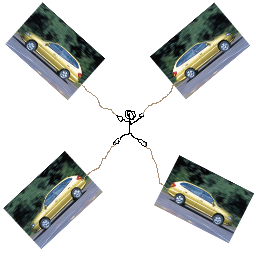

CANASTA

When asked to describe his most recent nightmare the Naval Officer said:
“I was at my mother’s condo. I guess it was a condo, but not anywhere she’s ever really lived. But anyway, she made mashed potatoes and told me to sit on the couch and eat them. So i walked over to the living room. The couch was beige leather and she had beige carpet. Everything was beige and the lights were so yellow and bright they were too warm and too yellow. I tried to ignore them but I couldn’t. They gave me a really awful feeling. I tried to sit on the couch but there were two huge marble and gold TV trays blocking my way and I couldn’t move them. I really couldn’t move them. And there were frogs on the television, exotic frogs.”